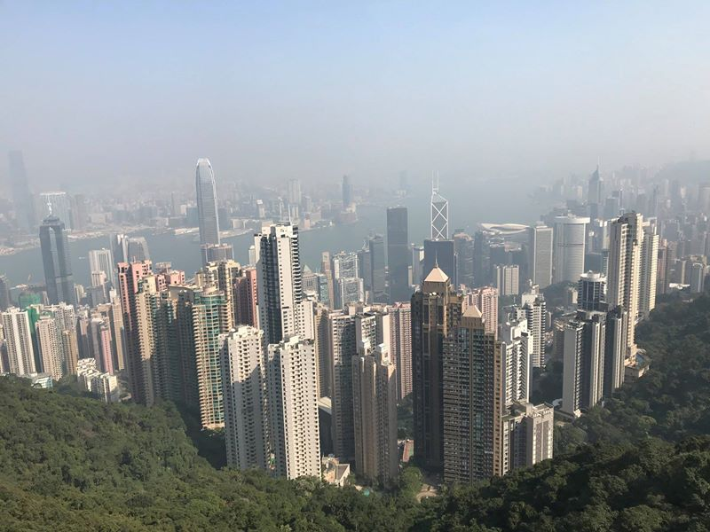
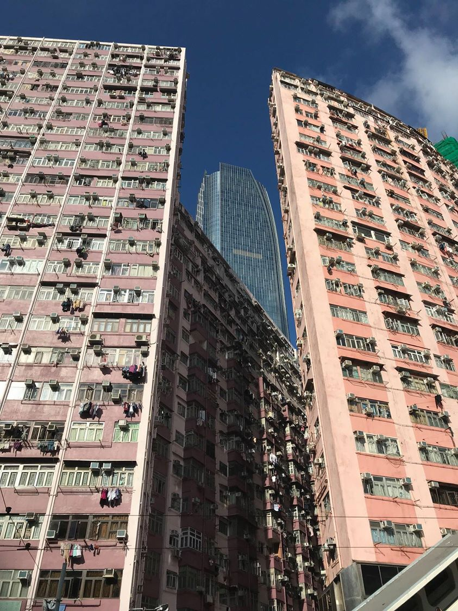
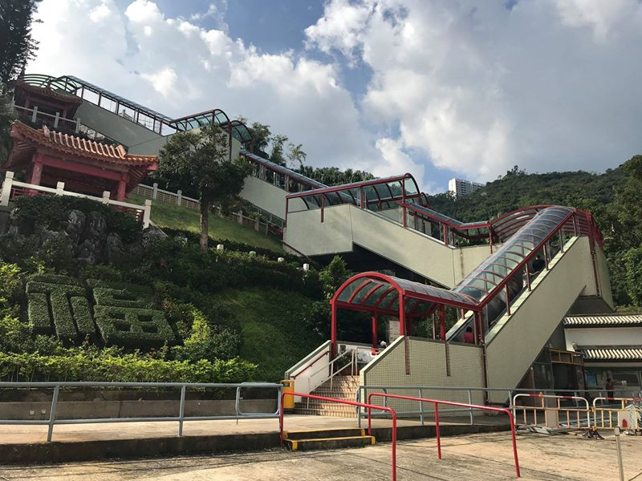
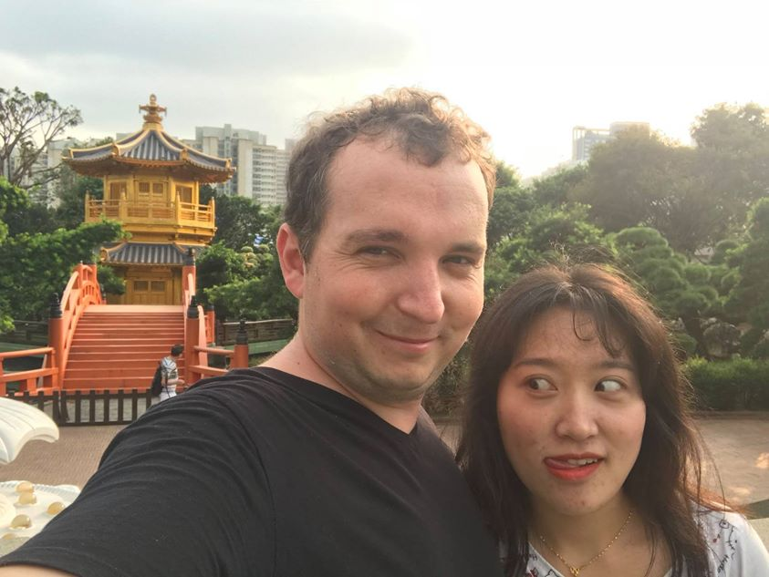
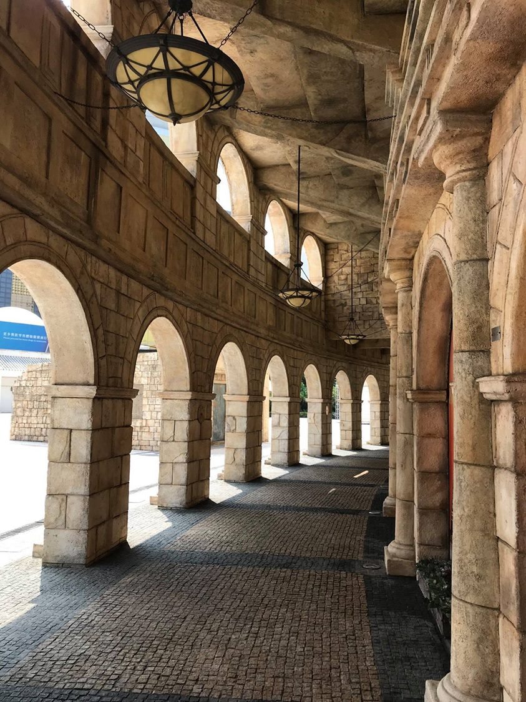

Hong Kong & Macau léto 2018
Hong Kong a Macao jsou poslední dvě zastávky před tím, než si zase pořídím kolo. Zažil jsem tu všechno možné včetně napadení žralokem!
Kde začít jinde než na Victoria peak. Odtud je vidět centrum Hong Kongu, města s nejvyšší hustotou mrakodrapů na světě, pěkně pohromadě.

Business centrum Hong Kongu.
Avenue of Stars při západu slunce.
Každý den v 20:00 se na 10 minut změní celé panorama na jednu velkou světelnou show a z mrakodrapů na druhém břehu se stanou filmová plátna.
Jakmile se člověk vzdálí, prosklené business budovy se začínají měnit na barevné králíkárny.

Byty jsou často extrémně malé, jen pár metrů čtverečních. Ale i tak je zde nájemné vysoké, Airbnb pod 1000 Kč/noc téměř nejde sehnat.
Uprostřed jednoho z hongkongských sídlišť. Čtyři dvacetipatrové věžáky jsou takto spojeny. Světlo do bytu téměř nedopadne.
Monster building ve čtvrti Quarry Bay.

Ač se Hong Kong považuje za jedno z nejdražších měst na světě, drahé je zde jen ubytování, vše ostatní s výjimkou turistických atrakcí je levné. Třeba trajekt na Victoria peak stál něco málo přes 10 Kč.
Hongkongské tramvaje, 7 Kč za libovolně dlouhou jízdu. V Hong Kongu je téměř vše minimálně dvoupatrové, jak většina autobusy, tak i tramvaje.
Hongkongské taxíky. Všechny vypadají úplně stejně.
Leoš Mareš na prohlídce Hong Kongu. V Hong Kongu je prý největší koncentrace Rolls-Royců na světě. Já jsem hlavně potkával Ferrari a Tesly, v business čtvrti to bylo tak 1 auto z 10.
Můj pokus vyfotit 4 roční období. Čekal jsem několik minut, než se pěti řadý proud lidí změnil alespoň na tohle. Pokud budete někdy v Hong Kongu, nejezděte na letiště metrem, ale autobusem E23, projede celé město z druhého patra.
Známá restaurace Tim Ho Wan, která získala michelinskou hvězdu. 睿 na mě vrhala nevraživé pohledy, když jsem ji řekl, že to tak dobré nebylo.

Lavičky podél schodů na Hong Kong island.
Po schodech se tady ale moc nechodí, Hong Kong má největší systém eskalátorů na světě.
Eskalátory vedou dokonce i na vrchol k buddhistickým klášterům.

Po Lin monastery na Lantau Island.
34 metrů vysoká bronzová socha Buddhy na Lantau island.
Obří paneláky na sídlištích mě v Hong Kongu zaujaly asi nejvíce, a tak jsem se po pár dnech náhodného bloudění rozhodl najít nějaká fotogenická místa cíleně. Jako první jsem navštívil Choi Hung estate. Překvapilo mě, jak strašně moc lidí tam bylo, přestože to místo vypadá dobře jen na fotkách. Hřiště bylo zabráno instagramery, dětem zůstalo jen druhý koš, který naštěstí pro ně nebyl fotogenický.
Zahrada Nan Lian uprostřed hongkongských sídlišť.
Kam utéct před ruchem velkoměsta? Do Nan Lian!
Pokus 12872. udělat si normální společnou fotku, výsledek jako vždy. Nedá se někde reklamovat? Není to ani dva roky, měla by být ještě v záruce.

Zahrada Nan Lian ještě jednou a naposled. Krásné místo, byl jsem tam mnohokrát, doporučuji.
Starý a nový Hong Kong.
Moje luxusní hongkongské apartmá, kde jsem bydlel jeden týden. Za 1000 Kč na noc to bylo vlastně moje nejdražší ubytování tento rok. Jinak tohle není jeden pokoj, tohle je celý byt.
Bylo to ve čtvrti Chungking Mansions. Nikdy za život mi nechtělo tolik lidí prodat drogy jako právě zde. Tady jsme zrovna s ostatními nájemníky sledovali, jak se skupinka dostává ze zaseknutého výtahu.
Obaly mobilních telefonu obyvatel Hong Kongu.
Po pár dnech jsme se přesunul do Mongkoku, který je nejrušnější čtvrtí na světě.
Mongkok.
Mongkok.
Uličky v Mongkoku.
Hong Kong, jedna z nejbohatších oblastí na světě. Večer se ulice v Mongkoku mění na tábořiště pro bezdomovce. Podél domů a výloh leží vyhublí lidé schovaní za otevřenými deštníky a není jich málo. Možná nikde na světě neuvidíte tak obrovský rozdíl mezi sociálními skupinami jako v Hong Kongu.
Jednoho dne jsem se vydal hledat Ten Thousand Buddhas Monastery a místo toho jsem vlezl úplně někam jinam.
Neznámý klášter podruhé.
Teď už jsem správně. Cesta na vrchol je lemována sochami Buddhů.
Původně jsem měl přiletět do Hong Kongu dříve, ale moje plány změnil tajfun, který se přes Hong Kong přehnal před pár dny. Na ulicích bylo vidět mnoho popadaných stromů. Tajfun ničil i zde.
Dokonce je tady i Buddha Lenin!
Ten Thousand Buddhas Monastery
Ten Thousand Buddhas Monastery. Sochu uprostřed zničil tajfun.
Na poslední 4 dny mě přijela navštívit 睿 a bydleli jsme ve 32. patře, což ocenila, protože má panický strach z výšek.
Výhled v Diamond Hill přes den.
A výhled v Diamond HIll přes noc.
Možná ne každého napadne strávit dny v Hong Kongu na pláži, přitom jich má Hong Kong docela dost. Zatímco centrum je přecpané lidmi, o kousek dál jsou pláže bez lidí. Teda s výjimkou létajících Číňanek, samozřejmě.
No a pak to přišlo! Z hlubin moře v nestřeženém okamžiku zaútočil jeden z nejděsivějších tvorů planety! 睿 měla co dělat, aby ji žralok bílý přestal znásilňovat nohu.
Macau byla poslední země (lépe řečeno zvláštní správní oblast Číny) na trase ve východní Asii Tohle je asi nejznámější část historického centra, ruiny kostela sv. Pavla.
Ruiny ještě jednou, tentokrát s pohledem na část města/země.
Chcete vidět Koloseum v Římě, ale nechcete tam být s dalšími tisíci turisty? V Macau je jedno taky, ale bez lidí.
Koloseum v Macau.

Koloseum v Macau.
Koloseum v Macau.
Macau bylo ještě nedávno portugalskou kolonií, a tak se zde všude používá portugalština, čínština a někde i angličtina.
Ulice v Macau poblíž Kolosea.
Čím je však Macau nejznámější, to jsou kasina. V Macau jsou na každém kroku, je to Las Vegas Asie. Hraví Asiati zde létají na víkend, ceny za hotel se přes víkend zdvojnásobují. Tohle je Casino Lisboa, jedno z hlavních kasin v Macau.
A hned naproti je hotel Grand Lisboa, patrně nejznámější budova celého Macau.
Mrakodrap Grand Lisboa ještě jednou, tentokrát z Fortaleza do Monte.
V Macau jsem strávil jen chvíli, původně jsem zde měl déle, ale let byl zrušen kvůli tajfunu. Takhle to vypadá, když zasáhne tajfun.